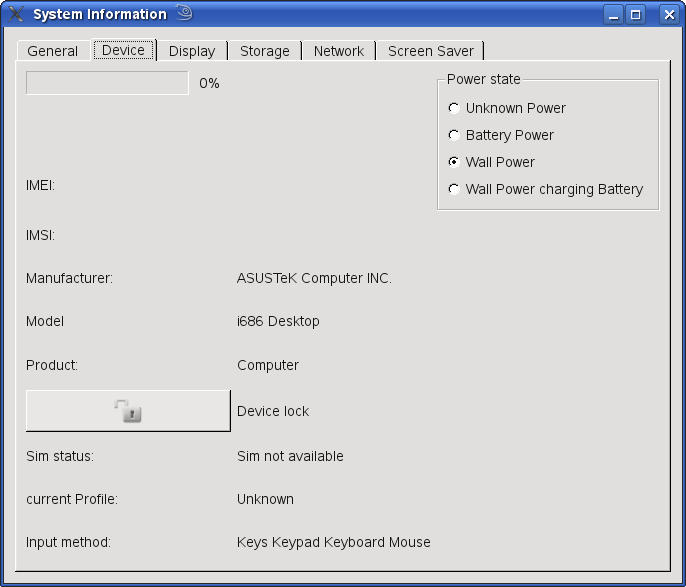

Files:

The System Information example uses a tabbed dialog, with each tab representing a particular type of data: versions, network and so on.
To access the information, the example creates objects belonging to the System Information classes
Access to details of the currently active phone profile | |
Service for applications to synchronize their activity | |
Access to battery and power information from the system | |
Access to device information from the system | |
Access to display information from the system | |
Access to various general information from the system. NOTE: In the future, parts of the QtSystemInfo API may be moved and renamed into an existing Qt class that provides similiar functionality | |
Access to various networking status and signals | |
Access to screen saver and blanking | |
Access to disk storage information from the system |
Here are some examples that show how the example application reads the device information.
The current language
systemInfo = new QSystemInfo(this);
curLanguageLineEdit->setText( systemInfo->currentLanguage());
Device information, starting with the battery level
bi = new QSystemBatteryInfo(this);
...
chargerTypeChanged(bi->chargerType());
currentBatStat = bi->batteryStatus();
The battery status is an enum, QSystemBatteryInfo::BatteryStatus, that indicates various battery levels and their significance, e.g., QSystemBatteryInfo::BatteryVeryLow.
The manufacturer id and the product name
manufacturerLabel->setText(di->manufacturer());
...
productLabel->setText(di->productName());
Other information is stored as bitwise flags. The following code shows the input methods being determined using flags.
QSystemDeviceInfo::InputMethodFlags methods = di->inputMethodType();
QStringList inputs;
if ((methods & QSystemDeviceInfo::Keys)=QSystemDeviceInfo::Keypad){
inputs << "Keys";
}
if ((methods & QSystemDeviceInfo::Keypad)=QSystemDeviceInfo::Keypad) {
inputs << "Keypad";
}
Various capabilities of the device can be found by testing for features. In the example a Feature combo box, on the General tab, has a hard coded list of features. When a listed feature is selected the getFeature() function is called with the index which is handled by applying a test to the corresponding feature.
QSystemInfo::Feature feature;
switch(index) {
...
case 1:
feature = QSystemInfo::BluetoothFeature;
...
QSystemInfo si;
featuresLineEdit->setText((si.hasFeatureSupported(feature) ? "true":"false" ));